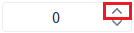
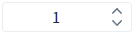
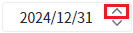
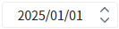
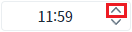
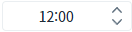
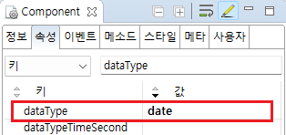
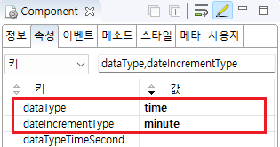

Spinner의 'dataType' 속성을 사용하여, 데이터의 타입을 설정한 예제입니다. 'dataType' 속성의 설정에 따른 기능은 아래와 같습니다.
dataType="number" : 숫자형 데이터의 증감 사용
dataType="date" : 날짜형 데이터의 증감 사용.
증감 유형 : 연, 연월, 연월일, 연월일시, 연월일시분
dataType="time" : 시간형 데이터의 증감 사용.
증감 유형 : 시분, 시분초
(기본 설정) 숫자형 데이터의 증감 기능
날짜형 데이터의 증감 기능
시간형 데이터의 증감 기능
컴포넌트 우측에 구성된 버튼을 클릭하여 데이터의 증감을 확인합니다.
예제 영역 '(기본) dataType="number"'에서 테스트합니다.Spinner의 초기 값은 '0'입니다.
1
STEP 1: Spinner의 증가 버튼을 클릭합니다.

2
STEP 2: 실행 결과를 확인합니다.
값이 1 증가되고 '1'이 표시됩니다.
Image 1.브라우저(Chrome) 실행 예시

예제 영역 'dataType="date"'에서 테스트합니다.Spinner의 초기 값은 '2024/12/31'입니다.
1
STEP 1: Spinner의 증가 버튼을 클릭합니다.
Image 2.브라우저(Chrome) 실행 예시

2
STEP 2: 실행 결과를 확인합니다.
값이 1일 증가되어 '2025/01/01'이 표시됩니다.
Image 3.브라우저(Chrome) 실행 예시

예제 영역 'dateType="time"'에서 테스트합니다.Spinner의 초기 값은 '11:59'입니다.
1
STEP 1: Spinner의 증가 버튼을 클릭합니다.
Image 4.브라우저(Chrome) 실행 예시

2
STEP 2: 실행 결과를 확인합니다.
값이 1분 증가되어 '12:00'이 표시됩니다.
Image 5.브라우저(Chrome) 실행 예시

1
속성을 설정합니다.
[필수] dataType="date"
데이터 타입을 날짜형으로 지정합니다.
[선택] dateIncrementType="day"
증감 단위를 지정합니다. 기본 설정 값은 day(일 단위)입니다.
Image 6.웹스퀘어 스튜디오의 Component View - 속성 설정 예시

Example 1.Source
<!-- spinner의 소스 본문 예시 --> <w2:spinner dataType="date" id="spi_exam2"> </w2:spinner>
1
속성을 설정합니다.
[필수] dataType="time"
데이터 타입을 시간형으로 지정합니다.
[필수] dateIncrementType="minute"
증감 단위를 분 단위로 지정합니다.
Image 7.웹스퀘어 스튜디오의 Component View - 속성 설정 예시

Example 2.Source
<!-- spinner의 소스 본문 예시 --> <w2:spinner dataType="time" dateIncrementType="minute" id="spi_exam3"> </w2:spinner>
dataType
dateIncrementType
dataTypeTimeSecond